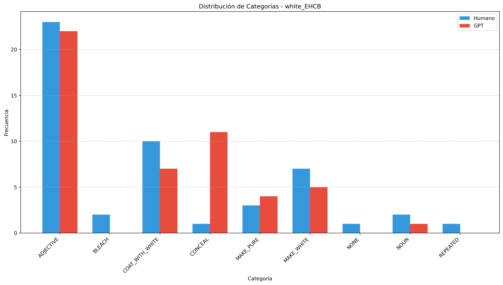

Informe de Evaluación - white_EHCB
Generado el 27/04/2025 12:14:31
Métricas Globales
Accuracy
0.4200
Cohen's Kappa
0.2263
Muestras
50
Imágenes de Análisis
Las siguientes imágenes muestran diferentes aspectos del análisis:
Matriz de Confusión

Distribución de Categorías
Métricas por Categoría

Métricas por Categoría
| Categoría | Muestras | Precisión | Recall | F1 |
|---|---|---|---|---|
| ADJECTIVE | 23.0 | 0.5909 | 0.5652 | 0.5778 |
| COAT_WITH_WHITE | 10.0 | 0.5000 | 0.4000 | 0.4444 |
| MAKE_WHITE | 7.0 | 0.5000 | 0.1429 | 0.2222 |
| MAKE_PURE | 3.0 | 0.6667 | 0.6667 | 0.6667 |
| BLEACH | 2.0 | 0.0000 | 0.0000 | 0.0000 |
| NOUN | 2.0 | 1.0000 | 0.5000 | 0.6667 |
| CONCEAL | 1.0 | 0.0000 | 0.0000 | 0.0000 |
| NONE | 1.0 | 0.0000 | 0.0000 | 0.0000 |
| REPEATED | 1.0 | 0.0000 | 0.0000 | 0.0000 |
Distribución de Categorías
| Categoría | Humano | GPT | Diferencia |
|---|---|---|---|
| ADJECTIVE | 23 | 22 | -1 |
| BLEACH | 2 | 1 | -1 |
| COAT_WITH_WHITE | 10 | 8 | -2 |
| CONCEAL | 1 | 13 | 12 |
| MAKE_PURE | 3 | 3 | 0 |
| MAKE_WHITE | 7 | 2 | -5 |
| NONE | 1 | 0 | -1 |
| NOUN | 2 | 1 | -1 |
| REPEATED | 1 | 0 | -1 |
Patrones de Confusión Comunes
| Categoría Humano | Categoría GPT | Frecuencia |
|---|---|---|
| ADJECTIVE | CONCEAL | 8 |
| COAT_WITH_WHITE | CONCEAL | 4 |
| MAKE_WHITE | ADJECTIVE | 3 |
| COAT_WITH_WHITE | ADJECTIVE | 2 |
| MAKE_WHITE | COAT_WITH_WHITE | 2 |
| BLEACH | COAT_WITH_WHITE | 2 |
| MAKE_PURE | CONCEAL | 1 |
| ADJECTIVE | MAKE_PURE | 1 |
| NONE | ADJECTIVE | 1 |
| ADJECTIVE | MAKE_WHITE | 1 |
| REPEATED | ADJECTIVE | 1 |
| NOUN | ADJECTIVE | 1 |
| MAKE_WHITE | BLEACH | 1 |
| CONCEAL | ADJECTIVE | 1 |
Ejemplos de Errores
Ejemplo 1
Texto: whiche are commaunded Chriſtianes ſo doe (which in our religion muſt neades be done onles we Certainlie it maye well be a whited toumbe ſet furth with colours to delite the beholders: but it ſhalbe no commō weale truely inſtitute, as in which thoſe
Categoría Humano: ADJECTIVE
Categoría GPT: CONCEAL
Ejemplo 2
Texto: , who it is that makes this criminall Accusation; then, against whom it is made: painted, but rotten Sepulchres, whited , but stinking Dunghills; against him that was blamelesse in his life, and in his Doctrine diuine and heauenly. The
Categoría Humano: ADJECTIVE
Categoría GPT: CONCEAL
Ejemplo 3
Texto: a Brother, and heire with Christ, and to apply a name appropriate to Gods Saints unto such, as they esteeme no better then whited tombes, and painted sepulchers. And because folly is the especiall object of contempt, they are come to that height of
Categoría Humano: COAT_WITH_WHITE
Categoría GPT: CONCEAL
Ejemplo 4
Texto: the world, were asked, how he would turne these wordes into Hebrue, Similes estis sepulchris dealbatis: you are like to whited graues: And, Sepulchrum eius apud vos est: His graue is among you: would any Hebrue I say translate it by this Hebrue
Categoría Humano: COAT_WITH_WHITE
Categoría GPT: CONCEAL
Ejemplo 5
Texto: ſon Feu. Bathe there bright Beauties: Honors Paradiſe To thoſe high Mountaines well may you entiſe. Mountaines all whited with eternall Snowe Flancke the one part; Immortall verdures flowe, Vpon a Plaine, that''s louely Beauties pride: The
Categoría Humano: MAKE_WHITE
Categoría GPT: ADJECTIVE
Ejemplo 6
Texto: beholding that inestimable Iewell, which as farre excelled all the rest of the Ladies as the Sunne doth the Moone, or white his contrary: who with such comely modesty behaued her self, that her looke did rightly resemble a countenance ful of
Categoría Humano: MAKE_WHITE
Categoría GPT: ADJECTIVE
Ejemplo 7
Texto: image, though it be ſet vpon an high mountaine, EVen as a cloud darkeneth the aire, and couereth the ſunne: AS a wall all whited on the out ſide, is not eaſily perceiued, AS thoſe things which agrée not with our nature, and haue EVen as the bough of a
Categoría Humano: COAT_WITH_WHITE
Categoría GPT: ADJECTIVE
Ejemplo 8
Texto: Ayre drawne in for breath, doth choake as soone as stopping of the Breath. As by burning charcoale, or by the smell of new whited walles in a close chamber Iustinian and others have beene choaked. Fausta, the wife of Constantine the great, was
Categoría Humano: COAT_WITH_WHITE
Categoría GPT: ADJECTIVE
Ejemplo 9
Texto: of minde: drerie. Afare? Afare ſia, nay, if it be ſo? do your worſt, I care not for you. Affare, as Confare. Affarinare, to white with flower or meale. Affarſi, to beſeeme, to be ſeemely, to be conuenient, to agree with. Affaſciare, to ſwathe, to
Categoría Humano: MAKE_WHITE
Categoría GPT: COAT_WITH_WHITE
Ejemplo 10
Texto: presence of ye throne of god. Brist. saith, this word therefore, is referred to their comming out of affliction, and so whited their stoles: And yet this gloser (saith he of me) taketh it away from the affliction, whereas that whiting was nothing
Categoría Humano: MAKE_WHITE
Categoría GPT: COAT_WITH_WHITE